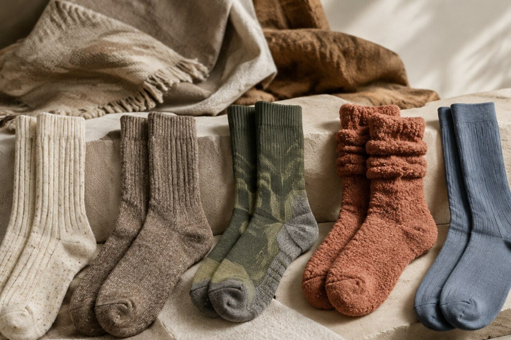
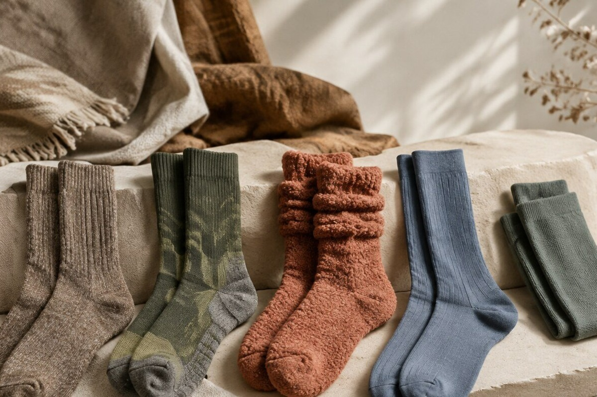
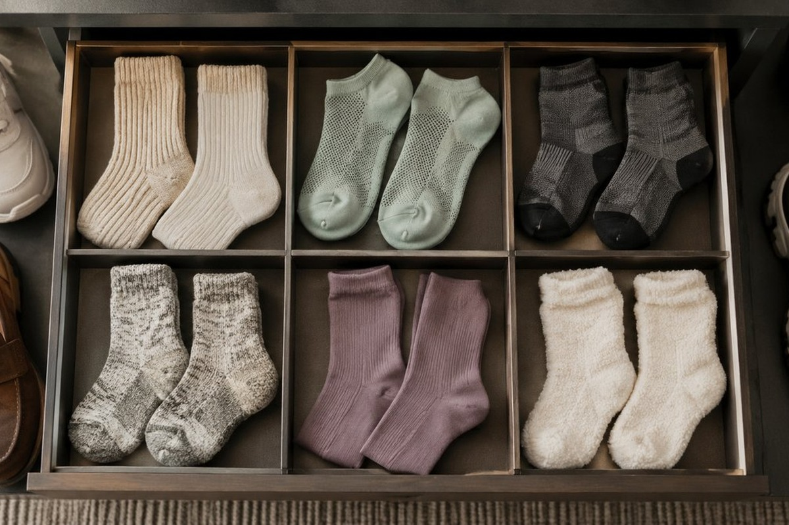
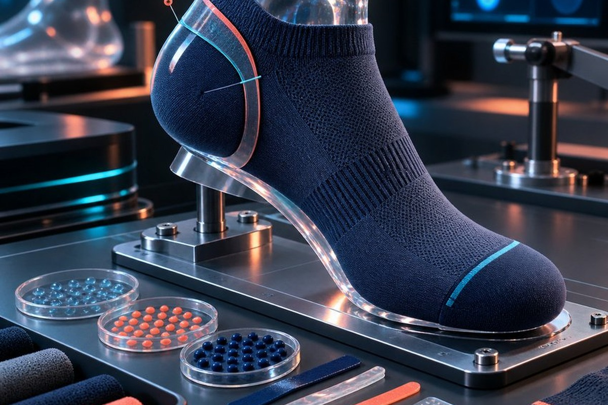
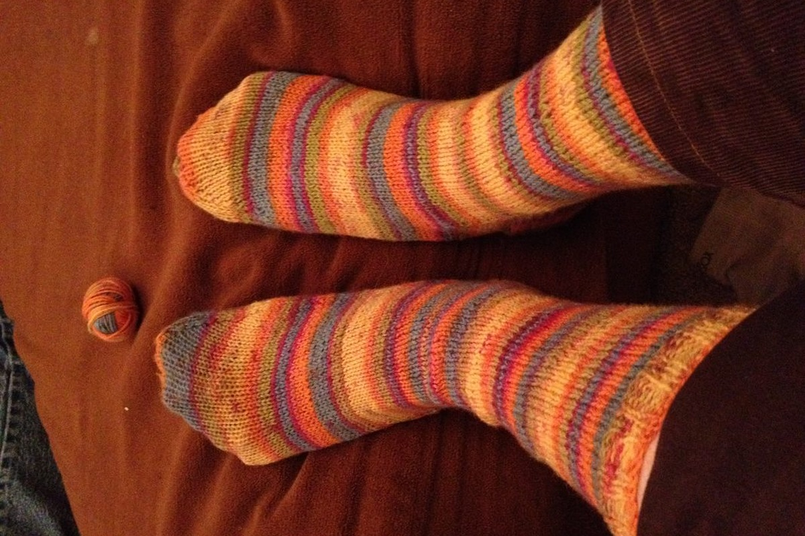

Curated Footlets & Precision Hosiery
Engineered for distinctive footwear silhouettes, high-mileage days, and uncompromising foot comfort. Explore our six core performance and lifestyle footlet models.
Athletic Running Footlet Liner
Featuring an anatomical left/right toe box, high-wicking synthetic and cotton blend, and anti-blister padding engineered for marathon training, speed sessions, and high-cadence gym regimens.
Heavy-Gauge Trail Hiking Crew
Knitted with heavy-gauge merino wool for extreme thermal regulation and maximum impact buffering during rigorous mountain trekking, boulder traverses, and cold backcountry expeditions.


Graduated Compression Recovery Sock
Calibrated with 15–20 mmHg graduated compression to enhance venous return, diminish swelling during transcontinental flights, and accelerate muscle revitalization after endurance athletics.
Aerobic Runner Low-Cut Footlet
An ultra-low silhouette featuring a reinforced heel tab that protects the Achilles tendon from shoe collar friction without showing above athletic trainers or casual deck footwear.


Trail Pro Protective Ankle Sock
Engineered with a dense ribbed debris-seal collar, high-density ankle bone pads, and mid-foot torsional compression to protect against grit and brush on rugged forest trails.
Active Run Low-Cut Sport Liner
Built with open-mesh ventilation panels over the instep, seamless hand-linked toes, and quick-drying hydrophobic yarns for intensive workouts and hot-weather cardio pursuits.

International Sizing & Tension Scale
Footlet Crystal hosiery is knitted to calibrated anatomical proportions for precise heel retention.
| Atelier Size | US Men | US Women | EU Sizing | UK Sizing | Recommended Cut |
|---|---|---|---|---|---|
| Size I (Petit) | 6.0 – 7.5 | 7.0 – 8.5 | 38 – 40 | 5.5 – 7.0 | Shallow Low-Vamp |
| Size II (Standard) | 8.0 – 10.0 | 9.0 – 11.0 | 41 – 43 | 7.5 – 9.5 | All Silhouettes |
| Size III (Grand) | 10.5 – 12.5 | 11.5 – 13.5 | 44 – 46 | 10.0 – 12.0 | Reinforced Heel Pocket |
| Size IV (Bespoke) | 13.0+ | 14.0+ | 47+ | 12.5+ | Private Commission Only |